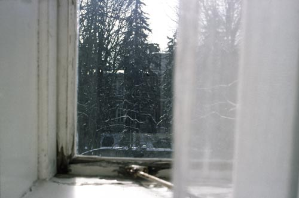

Details
Vernissage: 2. Dezember 2005
Eröffnung: Mr. Shinsuke Toda (Japanische Botschaft)
Einführende Worte: Univ. Prof. Dr. Karl Dantendorfer
Die Ausstellung war bis Ende Jänner 2006 zu besichtigen.
Fotografie

Vernissage: 2. Dezember 2005
Eröffnung: Mr. Shinsuke Toda (Japanische Botschaft)
Einführende Worte: Univ. Prof. Dr. Karl Dantendorfer
Die Ausstellung war bis Ende Jänner 2006 zu besichtigen.